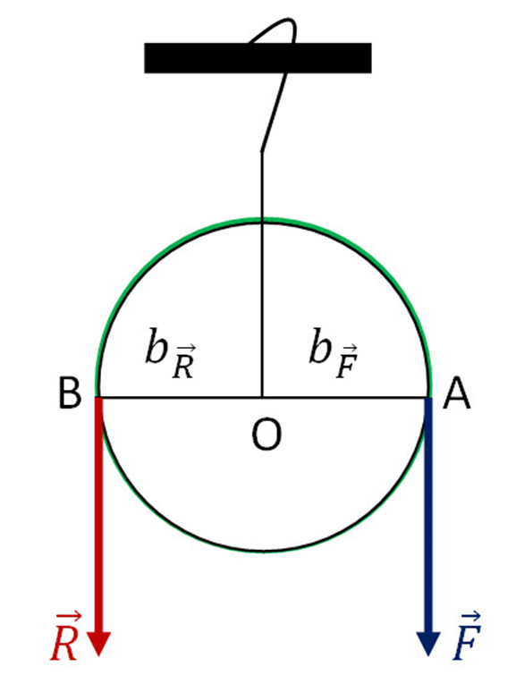
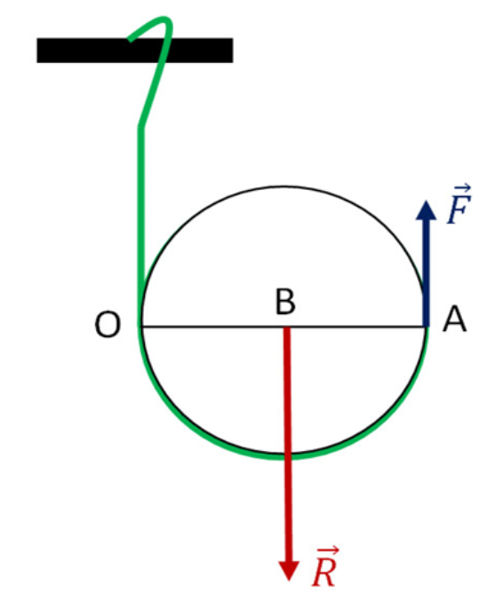
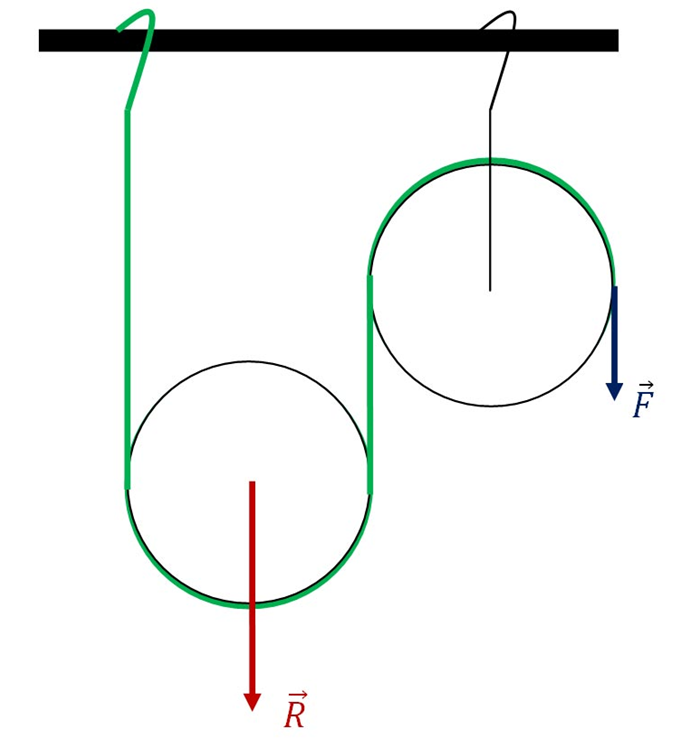

Lecția 4 – Scripetele
„Fizica nu este o materie dominată de formule, ci de logică.”
În această lecție descoperi ce este scripetele, ce rol are într-un sistem mecanic și care este diferența dintre scripetele fix, scripetele mobil și scripetele compus.
1. Ce este scripetele?
Scripetele este o mașină simplă formată, în esență, dintr-o roată prevăzută cu un șanț pe care se așază un fir, o frânghie sau un cablu.
El este folosit pentru ridicarea sau deplasarea sarcinilor și poate schimba direcția forței sau poate reduce forța necesară pentru ridicare.
2. Scripetele fix
La scripetele fix, axul roții rămâne pe loc. El nu se deplasează odată cu sarcina.

- schimbă direcția forței;
- în cazul ideal, nu micșorează valoarea forței;
- este util când vrei să tragi în jos pentru a ridica o sarcină.
În modelul ideal, forța activă este egală cu greutatea sarcinii.
3. Scripetele mobil
La scripetele mobil, roata se deplasează odată cu sarcina. El poate reduce forța necesară pentru ridicare.

În modelul ideal, forța necesară este jumătate din greutatea sarcinii.
4. Scripetele compus
Un scripete compus combină mai multe scripeți fixați și mobili într-un singur sistem. Acest tip de montaj este folosit când vrem să obținem un avantaj mecanic mai mare.

5. Comparație între tipurile de scripeți
| Tip de scripete | Ce face? | Relație ideală |
|---|---|---|
| Scripete fix | schimbă direcția forței | \(F = G\) |
| Scripete mobil | reduce forța necesară | \(F = \frac{G}{2}\) |
| Scripete compus | combină mai multe scripeți pentru avantaj mai mare | depinde de montaj |
6. Exemplu numeric
O sarcină are greutatea \(G = 80\,N\).
Forța necesară este egală cu greutatea sarcinii.
Forța necesară este mai mică.
7. Unde întâlnim scripeți?
Scripeții sunt folosiți în situații în care trebuie ridicate sau deplasate sarcini: la macarale, la unele lifturi, în ateliere, pe șantiere sau în diferite sisteme tehnice.
- permit ridicarea mai ușoară a corpurilor;
- pot schimba direcția de acțiune a forței;
- ajută la obținerea unui avantaj mecanic.
8. Reținem
- scripetele este o mașină simplă folosită la ridicarea sau deplasarea sarcinilor;
- scripetele fix schimbă direcția forței;
- scripetele mobil poate reduce forța necesară;
- scripetele compus combină mai multe scripeți pentru un avantaj mecanic mai mare;
- relațiile ideale sunt aproximative, deoarece în realitate apar pierderi prin frecare.
Verificare rapidă
Bifează varianta corectă.
Navigare
Butonul „Mergi mai departe” rămâne vizibil pe fiecare pagină a lecției.